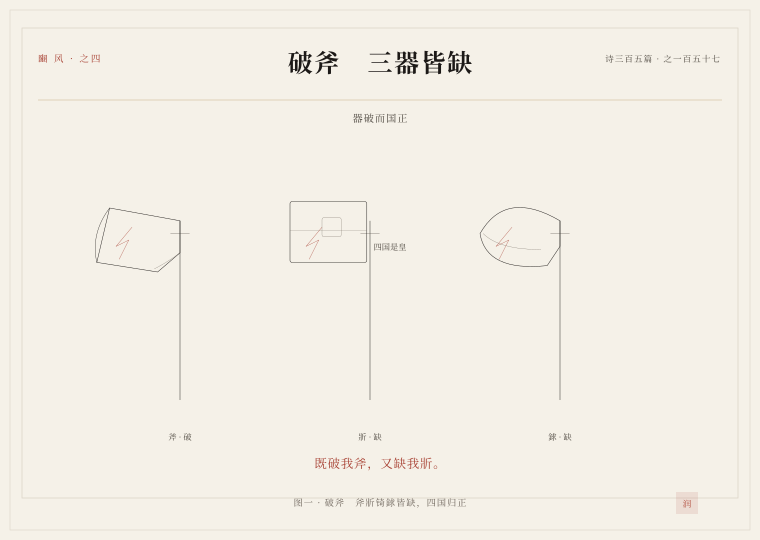
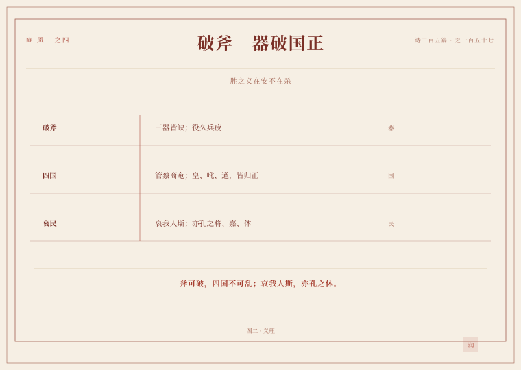

第一百五十七篇 破斧
豳风 · 之四 SJ157
朗读 · 普通话
依经文原文朗读，章次不读出；配古琴底乐，不改速、不加拖腔。全库同一音色（豆包 TTS），非播音员录制。
一 解题
诗三判：
- 谁在说：随周公东征的军士。战罢而归，斧破斨缺，回望四国已正，遂叹「哀我人斯，亦孔之将」。
- 说什么事：三章只换三器、三字：斧、斨、锜、銶；四国皇、吪、遒；我人将、嘉、休。器愈破，国愈正；身愈伤，美愈深。
- 为何编在此：豳风第四篇。前三篇写农事、护巢、归途，此篇写东征之成；三年之役，收于「四国是皇」。
《毛序》：「《破斧》，美周公也。周大夫以恶四国焉。」
朱子《诗集传》：「赋也。斧斨，兵器。四国，管蔡商奄也。皇，匡正也。吪，化也。遒，固也。将，大也。嘉、休，皆美也。」
本库的看法：《破斧》是一首把「战功」写成「器破」的诗。
毛序说「美周公」，朱子说「恶四国」，二说一美一恶，其实同指：器破而国正，身劳而民安；所美不在胜，在胜后之安。
须辨：斧、斨、锜、銶是四类兵器，不是四把斧；「四国」是管、蔡、商、奄，不是四方之国；皇是匡正，不是皇王；吪是化，不是讹诈；遒是固，不是遒劲；「哀我人斯」是哀怜我民，不是自哀。诗不夸杀伐，只写器破与民安。
断语：斧可破，四国不可乱；哀我人斯，亦孔之休。
先辨五事：「斨」是方孔斧；「锜」是凿类；「銶」是独头斧；「皇」是匡正；「吪」是化。
二 经文
第一章
既破我斧，又缺我斨。
周公东征，四国是皇。
哀我人斯，亦孔之将。
第二章
既破我斧，又缺我锜。
周公东征，四国是吪。
哀我人斯，亦孔之嘉。
第三章
既破我斧，又缺我銶。
周公东征，四国是遒。
哀我人斯，亦孔之休。
三 韵读
- 一章：斧、斨、皇、将，鱼、阳相叶。声开而正。
- 二章：斧、锜、吪、嘉，鱼、歌相叶。声转柔。
- 三章：斧、銶、遒、休，幽部相叶。声收而深。
读法：三章皆以「破斧」起，声由开到收；器愈破，声愈沉，美愈深。
四 字义与名物
- 斧：斧。斨：方孔斧。锜：凿类。銶：独头斧。缺：缺损。
- 周公：姬旦。东征：东伐管蔡商奄。四国：管、蔡、商、奄。皇：匡正。吪：化。遒：固。
- 哀：怜。我人：我民。斯：语词。将：大。嘉：美。休：美、安。
五 今译
一章：已破了我的斧，又缺了我的斨。周公东征，四国得以匡正。哀怜我民，也算甚大。
二章：已破了我的斧，又缺了我的锜。周公东征，四国得以化育。哀怜我民，也算甚美。
三章：已破了我的斧，又缺了我的銶。周公东征，四国得以安定。哀怜我民，也算甚美。
六 章旨
- 一章：斧破斨缺，是「器损」；四国是皇，是「国正」；哀我人斯，是「民安」。器损而国正，是诗之骨。
- 二章：锜缺，是「役久」；四国是吪，是「化行」；亦孔之嘉，是「美其安」。
- 三章：銶缺，是「战毕」；四国是遒，是「固」；亦孔之休，是「休」。
七 诗教
- 以器破见役久：三器皆缺，不夸战功；诗之实，在「破」字。
- 以国正见民安：四国皇、吪、遒，皆归正；胜之义，在安不在杀。
- 以哀见美：哀我人斯，而曰将、嘉、休；能哀民者，始能美政。
八 分寸与边界
- 不把四国读成四方之国：四国是管蔡商奄；泛称则东征之实失。
- 不把「皇」读成皇王：皇是匡正；读成帝王，则句义失。
- 不把「吪」读成讹诈：吪是化；读成讹，则美刺皆失。
- 不把「哀我人斯」读成自哀：哀是哀民；读成自怜，则诗之胸怀失。
九 存疑
- 诗旨：毛序「美周公」，朱子「恶四国」。本库从毛朱，以器破国正为骨。
- 「四国」：毛传「管蔡商奄」。从毛传。
- 「锜」：毛传「凿属」，一说斧属。从凿类。
- 「銶」：毛传「独头斧」。从毛传。
十 跨典
- 《尚书·蔡仲之命》周公东征、定奄；此篇「四国是皇」正其事。
- 《孟子》「仁者无敌」；此篇破斧而国正，正是仁者之胜。
- 《杜甫·兵车行》写役苦；此篇写器破而民安，一苦一安，可以对读。
十一 双卡与图
六对：
| 斨（方孔斧） |
斨（普通斧） |
| 锜（凿类） |
锜（斧） |
| 銶（独头斧） |
銶（锄） |
| 四国（管蔡商奄） |
四国（四方之国） |
| 皇（匡正） |
皇（皇王） |
| 吪（化） |
吪（讹诈） |

图一 · 破斧 三器皆缺，四国归正

图二 · 破斧 器破而国正，哀民而美政